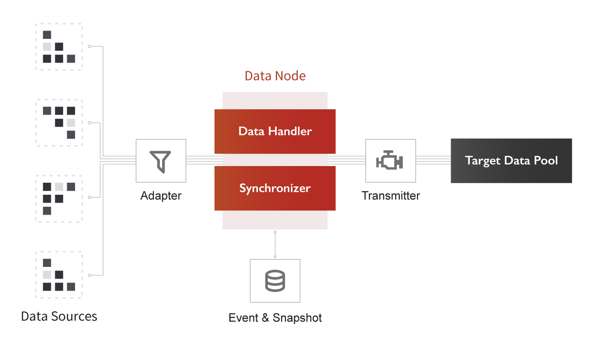

雲原生數據中台
打造資料庫與資料庫的連結
強化資料庫系統效能表現
雲原生數據中台
打造資料庫與資料庫的連結
強化資料庫系統效能表現
安裝 GRAVITY
下載 YAML
$ wget https://brobridgeorg.github.io/gravity-examples/deployments/docker-compose.yaml
下載資料表定義
$ wget https://brobridgeorg.github.io/gravity-examples/deployments/createTable.sql
部署 GRAVITY 和資料庫
$ docker-compose up -d
驗證 GRAVITY
$ docker run -it brobridgehub/gravity-demo-verify:latest sh -c './verify.sh 100'
管線客製化
變更資料庫
設定落地端資料庫的類型與連線方式
docker-compose.yaml
postgres:
image: "postgres:9"
ports:
- "5432:5432"
environment:
- POSTGRES_DB=gravity
- POSTGRES_USER=postgres
- POSTGRES_PASSWORD=1qaz@WSX
volumes:
- ${PWD}/createTable.sql:/docker-entrypoint-initdb.d/init.sql
GRAVITY 的工作原理
GRAVITY 是資料庫與資料庫之間溝通的中介層，讓資料庫的資料藉由中介資料節點，可以分流、遷移、複製、快取於不同的系統之中。為了連接和適應各種不同的資料庫系統、應用系統，GRAVITY 被設計得相當輕量，而且具有許多彈性，方便資料管理者、開發人員可以自由部署和設計自己所需的資料系統架構。
設計上，GRAVITY 主要工作是為資料源建立資料代理節點，然後從資料源接收資料，進行事件保存、分區、快照等工作。讓有需要的應用系統，可以跟資料節點訂閱資料，並將資料落地於指定的資料庫系統、訊息佇列或推送至另一個應用系統。
